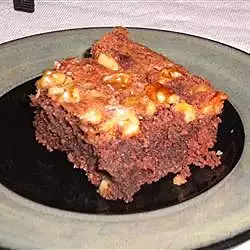

Brownie

Description
A brownie is a square or rectangular chocolate baked confection. Brownies come in a variety of forms and may be either fudgy or cakey, depending on their density.
Ingredients
- 5 eggs
- 1/2 cup unsweetened cocoa powder
- 21/2 cups white sugar
- 11/4 cups vegetable oil
- 11/4 cups matzo cake meal
- 11/4 cups chopped walnuts
Steps
- In a large mixing bowl, beat the eggs and the sugar together. Add the oil. Mix in the cake meal and the cocoa.
- Add nuts, or use the nuts as a topping. I put nuts on top rather than in this cake for two reasons. They make the top look good without having to frost it. Also, for those who don 1t or can 1t eat nuts, they are easily removed without having to search for them.
- Add nuts, or use the nuts as a topping. I put nuts on top rather than in this cake for two reasons. They make the top look good without having to frost it. Also, for those who don 1t or can 1t eat nuts, they are easily removed without having to search for them.
Back to homepage